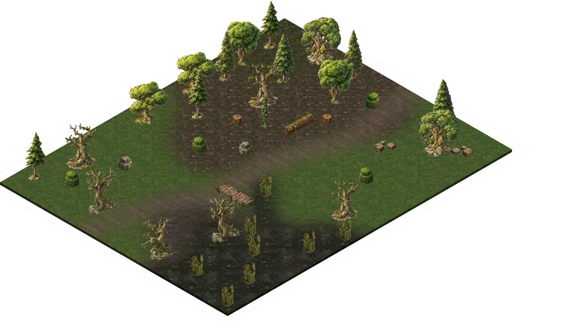
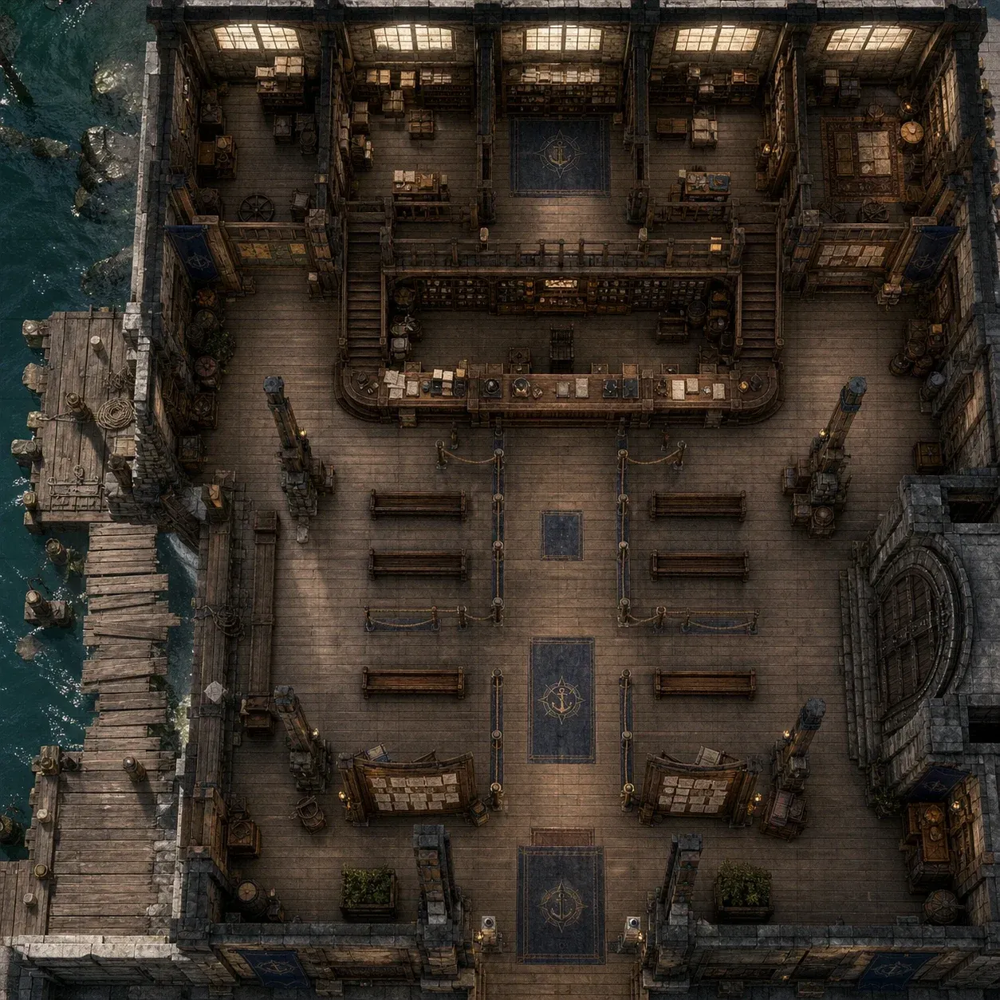

📍 01 뉴파티피플
Gamemaster:
나멜레스님이 어제 세션 요약해봅니다
하흐란의 본진을 점령하고 혼란을 진정시켜달라는 요청을 받아 떠난 일행들
화풀이를 위해 하흐란 시민을 끌고가는 왈든특공대를 발견하고 마는데
위협과 말싸움을 거쳐도 굽히지 않는 녀석들을 간단하게 무력으로 제압했지만 문제는 그것이 아니였다
갑자기 왈든을 공격하는 태양?
여러 캐릭터의 힘겨운 대응으로 겨우 이겨낸 후 녀석의 정체에 대해 하흐란에게 듣게 된다
이후 하흐란 지식고에서 여차저차해서 정보들을 얻어내고
성공적으로 시간내에 녀석들의 본진을 찾아내는데
과거 태양의 기사.. 였지만
이젠 그저 미쳐버려
무차별적으로
지나는 마을들을 모두 참수하고 불태우는 광인들이였다
엄청난 격전을 거쳐 그들을 모두 잡아내는 것에 성공하지만
고작 이 정도 수준이 아닐터인 쥬덴
그와 화살성채의 강함을..
알게 된다
~다음화에 계속~
Gamemaster:
처음으로 완전 무적 이런 몬스터를 상대하게된
세베루스 프락토르:
하흐란이 괜히 주문으로 떡칠한게 아니라는걸 알게된
실버문:
(+로 얻어낸 정보에서는 쥬덴이 코린트의 축복을 받아 물리적인 공격은 전혀 먹히지 않는다는 걸 알게 됐씁니다
세베루스 프락토르:
파훼하는 방법은 코린트를 갈아치우거나
쥬덴이 더 이상 쥬덴 백작이 아닌 상태가 되게 하는것
정도?
여러분은
북쪽에 있는 성채에서 이어진 꽃의 물결이 점차 확대됨을 볼 수 있습니다. 점점 빨라지고 있습니다. 하흐란들이 힘을 못쓰게 된 이후로 그 속도가 빨라졌음을 감지합니다
세베루스 프락토르:
세베루스 프락토르 takes a long rest.
리리 펀치플러프
Long Rest (8 Hours, New Day)
이클립스(세베루스):
이클립스(세베루스) takes a long rest.
실버문
Long Rest (8 Hours, New Day)

📍 ISO — 숲 가장자리 오솔길
Gamemaster:
자 그러면 여기서 언급하지 않을 수 없는 부분이 있겠네요
내레이터:
에이든은.... 그 때 그 이후로 어떻게 지냈나요
에이든:
위대한 트위스커 동지께서 왈든의 혁명적인 탈환을 위해 노력하였으나 반동분자들의 간악한 음모 아래 서거하신 이후
실버문:
(ㅋㅋㅋㅋㅋㅋㅋㅋㅋㅋㅋㅋㅋㅋㅋㅋㅋㅋㅋㅋㅋㅋㅋㅋㅋㅋㅋㅋㅋㅋㅋㅋㅋㅋㅋㅋㅋㅋㅋㅋㅋㅋㅋㅋㅋㅋㅋㅋㅋㅋㅋㅋ
실버문:
(실버문 확실히 미제 승냥이 처럼 생기긴 했어
에이든:
에이든은 혹시라도 에이든이 왈든인들의 혁명적인 결기를 모아 일을 진행시킬 것을 염려한 몇몇 반역적인 왈든인들에게 감시당하였으며
어느정도 감정이 가라앉은 뒤에야 풀려날 수 있었습니다... 아마 니콜라스가 기계를 어딘가로 빼돌렸거나 잘 숨겼겠죠
내레이터:
그러면 여전히 분노가 사그라들지는 않았겠네요
실버문:
(그 트위스커를 필두로 왈든 탈환전을 진행했는데, 트위스커는 하흐란의 오염 정화하여 모든 하흐란들을 죽이려고 했으나 현재 화살성채 쪽에서 코린트의 축복이 너무나도 과잉된 상태라 하흐란의 오염을 냅둬야 하는 상황. 트위스커는 이를 못받아들이고 모험가들과 대립했으며 에이든도 이에 가세 했으나 결국 에이든이 모험가들을 제대로 적대하지 못하면서 모험가들이 이겼습니다. 이걸로 트위스커 사망.
에이든:
"그래서 뭘 해야 한다고? 시킬 일이 있어서 풀어준거 아니야?"
실버문:
(실버문이랑 에이든만 알겠군요 ㅋㅋㅋㅌㅋㅋㅋㅋ
(아니다 말은 해줬을거 같은
크로스로드로 가자고 하면 그냥 갔을겁니까?
에이든:
거기 일 좀 해주라고 하면 가겠군요. 트위스커가 죽고 강경파(?)들이 에이든한테 모일 수도 있으니
오히려 지금은 잠시 자기가 떠나주는게 낫다고 생각할듯
내레이터:
그러면 당신은... 씁쓸하게 왈든을 떠나겠군요
Gamemaster:
당신은 왈든 탈환의 꿈을 가지고 있었나요?
에이든:
에이든에게 왈든 탈환은 드림이 아니라 거의 에브리띵이었죠
근데 자기를 막은 사람이 가장 가까운 사람들이고, 가장 가까운 사람들이라서 에이든이 싸움에서 머뭇거리고 행동하지 못했으니
내레이터:
그렇다면.. 그 꿈은 이제 영원히 좌절되었습니다. 이전에는 왈든을 찾기 위해서 필요한건 힘이었으나
그 충분한 힘을 가지고도 왈든을 탈환하는건 좌절되었습니다
어쩌면 과잉 생명이 해결된다한들
지금의 분위기로 왈든을 탈환할 수 있을지 모르겠습니다
에이든:
"......" 나 우울해요 라는 글씨가 얼굴에 써져 있는 수준입니다
실버문:
"........" 저걸 줄 풀어줄때부터 보고 있는 실버문
피-곤
(웬디로 올 걸 그랬나
(ㅋㅋㅋㅋㅋㅋㅋ
Gamemaster:
(하믈렛 농도를 희석시키는군요 ㅋㅋ
리리 펀치플러프:
(아 그럼 웬디로 올게욬ㅋㅋ 그게 더 재밌을 거 같네요...
웬디 위버
Long Rest (8 Hours, New Day)
실버문:
@내막은 실버문이 대충 설명했다고 하겠습니다
(쓰러져서 나온거
세베루스 프락토르:
@ 하.. 인생.. 하는 표정으로 걷고 있습니다
에이든:
"표정 썩은거 봐라. 나랑 인생 망한 표정으로 대결하면 딱이겠네."
웬디 위버:
"아휴... 진짜." (속상한 얼굴로 에이든 쳐다봅니다)
실버문:
"저것 좀 어떻게 해보게. 고집은 누굴 닮았는지." 한숨 푹 쉽니다
웬디 위버:
"니 얘기 듣고 걱정되어서 온 거잖아."
에이든:
"일을 다 망쳐놓고 널 보내서 뒷수습 하래?"
"다 망할 자식들 뿐이야. 입으로만 고향을 찾겠다고 설쳐대고."
실버문:
"아이고야...." 머리 아프다는 듯이 고개 절래절래 저으며 걸어갑니다
웬디 위버:
"...왈든 땅도 땅이지만, 사람들을 다 잃고 거길 찾아봤자 무슨 의미야."
세베루스 프락토르:
"...." @좋을 때구만 하는 생각 하는중
에이든:
"우리 고향에는 아직도 독액이 흘러넘치는데 다들 뭐가 그렇게 냉정하고 태평한지!"
"파티피플, 계류관 놈들이랑 어울려 다니다보니 다들 소속감조차 흐려진 거냐고."
웬디 위버:
"너만 걱정하고, 너만 그런 생각하는 게 아니라고..."
내레이터:
그러면.... 여러분은 다소 이상한 느낌이 들기 시작합니다.
"뭔가 이상한데"
Gamemaster:
갑자기 몸이 좀 느려진 것 같은... 아니 나른해진 것 같은 그런 생각이
세베루스 프락토르:
"부상입은게 아직 안 풀렸나.. 몸이 좀 무겁네"
웬디 위버:
"...좀 피곤한 것 같긴 하네요."
에이든:
"나도 컨디션이... 안좋은데..."
실버문:
@빠르게 주변의 상황을 파악하려고 합니다
세베루스 프락토르:
여기서 내가 aid를 받고 싶다면
손을 들어주세요
내레이터:
그러면... 갑자기 중력이 약해진 것 같이 붕 뜨더니
그대로 돌아옵니다
실버문:
(근접 세분이 가져가는게 낫지 않을까요
Gamemaster:
그 이상한 감각은 바로 사라졌지만 몇명은... 혹시 알지 모르겠군요 아니 모르나?
실버문:
".....방금 분명 느낌이 이상했는데."
내레이터:
이것은 깔끔하게 '역사'로 굴립니다. 얼마 전에 저 꿈망토 받은 세션에 참여했다면 이점을 받습니다
세베루스 프락토르:
(체력 5 채워주시면 됩니다
(언제죠?
Gamemaster:
(모르면 안참여한거니깐 깔끔하게 굴리면됩니다
(역시 백전노장 실버문과 우등생 웬디
내레이터:
그러면 웬디는 이 느낌을 얼마 전에 코린트의 잔재와 싸웠을 때 느꼈었습니다
의식은 그대로인데 주변의 시간이 느리게 가고 갑자기 빠르게 가는듯한
마치 꿈을 꾸는 듯한
웬디 위버:
"어? 어쩐지 익숙한 기운이..."
Gamemaster:
실버문은 그냥 꿈꾸는 것 같은 느낌을 받겠군요... 마치 페이와일드 그것도 상당히 혼란스러운 축에 속한 그런 곳 처럼 말입니다
세베루스 프락토르:
"...? 이게 뭐시여.." @무슨 느낌인지 못 알아챕니다
"....." 의아해하며 주변을 두리번거립니다. 특별히 바뀐게 있나요?
웬디 위버:
"얼마 전에, 코린트의 잔재 같은 걸 만났을 때 딱 이랬거든요..."
Gamemaster:
그러면 아주 잠깐의 이상함만 있었을 뿐이지 주변은 고요합니다
웬디 위버:
(그때 죽을 뻔한 웬디는 몸을 떱니다)
에이든:
"진짜로 코린트의 기운이 몰려오고 있나보네."
실버문:
"그냥 그런거라면 차라리 낫겠네만..."
내레이터:
여러분은 직감적으로 어느정도는 눈치챌 수 있을 것 같습니다. 페이와일드와 물질계가
점차 뒤섞여가고 있다는 것을 말입니다
"이런 일도 있다는 건 들어본적이 없는데..."
"그 코린트라는 녀석, 여러 의미로 전대미문이구만."
실버문:
"...일단 나아갈때 좀 더 주의해서 나아가지."
내레이터:
그러면.... 여러분은 이런 이변이 있을 때는 어디로 향했는지 기억해볼 수 있습니다
(ㅋㅋㅋㅋㅋㅋㅋ
Gamemaster:
항상 계류관에서 불렀었죠
에이든:
"코린트는 쥬덴의 조력자고... 코린트의 힘으로 국경지대를 완전히 지배하면 결과적으론 쥬덴의 지배력이 높아지는 건가?"
"놈이 원하는게 그거야?"
세베루스 프락토르:
"그 중앙 모험가길드에서 왔다던 양반은 지금 어디에 있는거야?"
실버문:
"음... 지배력을 높이려고 하기보다는, 그 선지자라는 녀석에게 대항하기 위함이라고는 들었네."
세베루스 프락토르:
"일단 계류관으로 돌아가서 작전회의든 뭐든 해보자고"
내레이터:
사건을 파악하기위해서 계류관으로 가볼 수 있겠네요
"가기 싫네." 인상을 씁니다
실버문:
"가서 그냥 아무 말 안해도 되니까 일단은 따라오게."
웬디 위버:
"일단 가요. 얘는 제가 챙길 테니까."
에이든:
"크로스로드 따위 다시 돌아가고 싶지 않았어..."
실버문:
'음?' 하는 표정으로 웬디 슬쩍 보다가 에이든 봤다가 다시 웬디 본 다음에 시선 돌림
웬디 위버:
"일단은 가, 얼른." (에이든 등을 떠밉니다)
"우리도"
"난.. 저쪽에 진 빚도 있고 말이야"

📍 101 계류관 내부 접수홀 전투맵
실버문:
@그러면 대충 에이든 달래가며 계류관으로 갑니다
이 사태를 직감하고 달려온 많은 베테랑들이 있습니다. (물론 이 자리에 없는 pc들)_
@그러면 적당히 있었던 일을 보고를 합니다
사실 이전에도 샌딩 스톤으로 정기연락은 주고 받고 있었겠지만...
발렌:
그러면 중앙 감찰관인 발렌이 저벅 저벅 걸어옵니다
"화살성채를 감시중인 자들로부터 이런 비보를 받았습니다."
"무언가 이변이 발생했다구요."
발렌:
"아마 그것은 페이와일드로 전이해간 그 '해그무리' 들이 원인이 된 것 같다고 합니다."
세베루스 프락토르:
(이 녀석 몇달전에 발렌을 암살할뻔했다
에이든:
"무언가 이변이 발생했다가 끝이야?"
Gamemaster:
갑자기 눈 앞에 트리빌리혼의 환영이 나타납니다
트리빌리혼:
마치 눈 앞에 있는 것 같습니다. 양을 닮은 듯한 그 헤그는 이렇게 말합니다
트리빌리혼:
"급격한 페이와일드화는 저희가 원인이 맞습니다."
트리빌리혼:
그러면 갑자기 비웃는 목소리로 변합니다
"여러분 덕분에 저희의 모든 계획이 성공 단계에 이르렀으니까요"
"시키트리스도 죽여줬고, 하흐란과 쥬덴의 이목도 잘 끌어주셨습니다."
트리빌리혼:
"지금까지 쓸모없는 일 하느라 수고가 많으셨습니다."
에이든:
"시키트리스를 죽이고... 하흐란과 쥬덴과 대립한 것이 왜 너희 해그들에게 이익이 되었는데?"
세베루스 프락토르:
"그러게 하흐란 토벌은 좀 나중에 하자고 했잖냐.. 씁 뭐 이미 지난일이니 어쩔 수 없지"
트리빌리혼:
"시키트리스는 처음부터 자신이 코린트의 뒤를 이어서 새로운 코린트가 되려고 했습니다."
"그는 알고 있던거죠. 가장 중요한건 이 땅과의 계약이라는걸"
세베루스 프락토르:
"시키트리스가 새로운 코린트가 됐다면"
트리빌리혼:
"생명의 신으로 승천하는 자가 이 모든 전투에서 승리할 것이라는걸"
세베루스 프락토르:
"쥬덴과 휘하기사들은 계약이 끊기는 식이겠군"
"그걸 막아줘서 고맙다고 비웃으러 온건가?"
트리빌리혼:
"그리고 그가 준비해놓은 모든 것이 이제 우리의 자산이 되었습니다. 정말 고맙습니다."
"그리고 코린트가 저희를 막으려고 보낸 병력도 방해하여 우리를 도와주었죠"
"지금 저 페이와일드화는 두려움을 느낀 코린트가 내 뿜는 단말마입니다."
트리빌리혼:
"이제 이 땅은 새로운 신을 맞이하게 되겠죠"
"제가 새로운 신이 되면... 후후.. 여러분을 좀 더 귀엽게 만들어볼까요"
"시키트리스를 크로스로드에서 함께 막아낼 때... 제루스로부터 우리가 너희를 지켰을 때... 우리는 친구에 가까워졌다고 생각했어."
"이 모든게 너한텐 그냥 다 계획의 일환일 뿐이야?"
세베루스 프락토르:
(에이든 서사가 진짜 배신의 연속이구나
(힘내라..
트리빌리혼:
"이래서 인간들은 그 짧은 삶을 살면서... 저희가 얼마나 많은 사람과 만나고 헤어질거라 생각하시나요?"
@뭔가 숨기는지...?
에이든:
"그럼... 왜 친절하게 우리 앞에 나타나서 모든게 네 계획이었음을 일깨워 주는건데..."
트리빌리혼:
그러면 그녀의 환영이 살짝 지직거립니다
세베루스 프락토르:
"근데 너가 새 코린트가 되려고 하면"
"쥬덴이 가만히 있을까?"
트리빌리혼:
"이렇게까지 했는데 모르고 당하시면 재미가 없을거잖아요"
그러면 눈을 반짝이며 말합니다
세베루스 프락토르:
"코린트는 그렇다쳐도 말이야"
트리빌리혼:
"그런건 신의 힘으로 어떻게든 할 수 있습니다."
"다음에 볼 떄는 제가 승천한 이후겠네요."
세베루스 프락토르:
"하긴 뭐 승천만 하면 쥬덴은 더 이상 축복을 받지 못할테니"
트리빌리혼:
그러면 트리빌리혼의 환영이 점차 사라집니다
세베루스 프락토르:
"하.. 지금 코린트나 트리빌리혼이나 둘다 엿같구만.."
Gamemaster:
묘하게 이상함을 느낄 수는 있습니다. 이게 뭐지? 싶은
웬디 위버:
"...둘 다 막을 힘이 우리에게 있을까요?"
에이든:
환영이 사라진 자리에 손을 뻗었다가... 그대로 주먹을 쥡니다
그러면 뭔가 생각에 잠긴듯한 표정입니다
세베루스 프락토르:
"이이제이는 방법이 없나?"
세베루스 프락토르:
"코린트도 심각성을 안거같던데"
발렌:
"하지만 하나 확실한건... 그 중에 누가 이겨도 우리한테 좋은 상황은 아니겠군요"
발렌:
"적어도 누군가는 페이와일드에가서 상황을 봐야겠습니다."
에이든:
"내가 좋아하는 것들은... 전부 나를 배신해."
에이든:
"할다론이 옳았어... 해그들이랑 상종하지 말아야 한다고 했을 때 난 그걸 믿었어야 했어."
세베루스 프락토르:
"정찰을 하고 와달라는거군"
발렌:
"아뇨 그렇게 간단하진 않을거같습니다."
웬디 위버:
"속이는 쪽이 나쁜 거지. 믿는 쪽이 나쁜 게 아냐."
발렌:
"아마 제 예상컨데... 크게 개입하게 되겠죠"
웬디 위버:
"그럼 다같이 가서 상황을 보고 막아야 하는 건가요..."
발렌:
"그리고 만약 무언가 변화가 있다면..."
실버문:
"일단 그래야겠군. 당장 막을 인원이 없으니."
세베루스 프락토르:
"하흐란 별동대때의 악몽이 떠오르는군"
"이번엔 전면전이 안되게 해보자고"
발렌:
"코린트가 떠나있는 동안, 쥬덴은 무방비해져있을겁니다."
"제가 이곳에 온... 마지막 임무를 실행할 때가 된 것 같습니다"
"쥬덴에게서 이 국경지대를 해방시켜야할 때입니다."
에이든:
"그래? 그건 이전부터 우리가 하려고 했던 거야."
에이든:
"왈든을 되찾아도 쥬덴을 치지 못하면 무용했으니까."
실버문:
"뭐 일단은 할수 있는 일을 하지."
세베루스 프락토르:
"코린트가 문제군... 난 우리지역 토착신이 저런 노답일줄 몰랐어"
발렌:
"반대로 코린트의 축복을 잃은 쥬덴은 더 위험할 수 있습니다."
세베루스 프락토르:
"그 뇌가 헤까닥한게 더 심해진다는건가?"
세베루스 프락토르:
"하기야.. 축복을 빼고봐도 그 양반.. 용을 잡은 영웅이였지"
에이든:
"아크페이의 힘을 업고 있는 것보단 차라리 머리가 해까닥한게 더 낫지."
내레이터:
그러면... 누군가가 뚜벅 뚜벅 걸어옵니다
세베루스 프락토르:
"싸워봤는데 안 뒤지더라고, 축복을 받은 상태면 잡을 방법이 없을거다"
Hahran Bladesinger:
그러면 완전무장한 하흐란 한명이 걸어들어옵니다
"하흐란이 여긴 무슨 일이지"
내레이터:
여러분이 왈든에서 본 의욕없는 하흐란과 다르게
내레이터:
완전무장한 무기에서는 힘까지 감돕니다
그리고 정신파로 여러분에게 말을 겁니다
Hahran Bladesinger:
"선지자가 올 것이다"
세베루스 프락토르:
"뭐? 가뜩이나 정신없는데 선지자까지?"
Hahran Bladesinger:
"가장 최악의 상황은 쥬덴이 선지자에게 사로잡히는 것이다"
Hahran Bladesinger:
"그들은 그걸 처음부터 노렸다"
"하믈렛을 노린 이유도 그곳에서부터 쥬덴을 차지하기 위함이었지"
웬디 위버:
(답답한 마음에 얼굴을 감싸쥡니다)
실버문:
"아무리 생각해도 이 마을엔 안오는게 맞았단 말이지." 혀를 쯧 차며 인상 구깁니다.
Hahran Bladesinger:
"그러니 그 일말의 여유조차 주면 안될 것이다."
Hahran Bladesinger:
자 그런데
실버문:
"우리는 우리의 최선을 다하면 되네, 웬디 양."
세베루스 프락토르:
"그 트램펄린혼인지 뭔지 하는 녀석이 신이 된다고 해도 그냥 쥬덴도 아닌 선지자와 함께하는 쥬덴은 어쩔 도리가 없을텐데"
에이든:
"트리빌리혼의 환영이 왜 나타났는지 알만 하네."
어쩌면 여러분에게는 상당히
세베루스 프락토르:
"그 녀석은 속 편하게 승천이니 뭐니 하려고 하겠지"
에이든:
"해그들이 코린트의 힘을 가지고 쟁탈전을 벌이는 동안 취약한 쥬덴을 함락해라. 이런 의미로 받아들이면 되나?"
웬디 위버:
"저는 아무 것도 모르겠어요. 왜 이렇게... 그냥 나는 사람들이랑 행복하게 지내고 싶었을 뿐인데."
에이든:
"하핫! 젠장. 이럴 줄 알았지. 내가 말했잖아 할배. 이제 좀만 더 하면 하흐란과 이웃도 될 수 있을거라고 했지?"
"그 말대로 이제 동료로 삼게 생겼네."
내레이터:
그러면 이제는 동료 아니 동맹으로까지 삼자는 이야기가 나왔습니다
Hahran Bladesinger:
"나를 믿을지 안믿을지는 너희들의 선택이다"
에이든:
"다른 녀석은 몰라도 내가 하흐란 놈이랑 같이 일할 것 같냐?"
실버문:
@실버문이 살펴봤을 때 그는 감정이 있는 쪽인가요, 없는 쪽인가요?
내레이터:
사념파로 말하고 있어서 이해하기 힘듭니다
세베루스 프락토르:
"어디서 굴러먹던 녀석인지는 모르겠지만"
실버문:
(통찰 안먹힐까요...? 불리점이라도...?
세베루스 프락토르:
"보통 하흐란이랑은 다른가보군"
웬디 위버:
"하흐란을... 어떻게 믿어요..."
Hahran Bladesinger:
싸이킥 관련 능력이라도 있으면 가능하겠군요
세베루스 프락토르:
"계류관에 몇몇있던 그런 부류인가?"
실버문:
(그 애기 하흐란용 정신파 보조장치는 있는데
실버문:
"...그건 또 처음 듣는 이야기군."
세베루스 프락토르:
"하... 걔낸 또 해그쪽이야?"
Hahran Bladesinger:
"이제는 지난 이야기들이지"
세베루스 프락토르:
"뭐 아무튼 다른 세력이랑 연합이 가능은 하다는소리군"
세베루스 프락토르:
"통수만 치지 마라, 뭐 나는 그렇다는거고 다른 녀석들은 어떤 생각일지 모르겠지만"
내레이터:
이곳에 있을 수 있는 다른 왈든인들도 이에대해서는 감정이 안좋을 수도 있겠습니다
"왈든 공격에 관여했어 안했어."
Hahran Bladesinger:
"그곳이 공격받고 부숴질 때 나는 그곳에 있었다"
에이든:
"이 개자식아. 내가 지금 널 죽이지 않는게 내가 최대한 발휘할 수 있는 인내심이다."
Hahran Bladesinger:
"너희들 왈든 인들을 포위하는 것에도 가담하였다"
세베루스 프락토르:
"흐음.." @팔짱끼고 흠.. 하는 중
웬디 위버:
"하..." (입술을 꽉 깨뭅니다)
"저런 자를 뭘 믿고..."
실버문:
"....감시관, 감시관은 이 일이 하흐란의 도움 없이는 성공 할 수 없을 것이라고 보시오?"
Hahran Bladesinger:
"왈든은 내가 무너트렸다"
발렌:
"하지만 선지자들에 대한 그들의 능력은"
"그 어떤 종족보다도 뛰어날겁니다."
"그런 문제가 아니란걸 알잖소."
웬디 위버:
"그래서 저희가 원수랑 같이... 함께 해야 한다고요?"
세베루스 프락토르:
"확실히 직전의 전투에서 하흐란 도움이 없었다면"
웬디 위버:
"내 이웃을, 내 친구를 죽였을 지도 모르는 자인데."
세베루스 프락토르:
"증오는 이해한다만 뽑아먹을 수 있는건 뽑아먹어야지"
발렌:
"여러분 왈든인들에게는 미안한 이야기지만"
"나는 확신하고 있습니다."
"저는, 저는..."
Hahran Bladesinger:
그러면 돌아갑니다
"선택하는 것은 자유다"
라고 말합니다
에이든:
"데리고 간다. 어디부터 가면 되지? 페이와일드를 정찰해달라고? 통로라도 알아?"
생기는군요
"우리도 화살성채로 진입할겁니다. 대부분의 병력을 가지고요"
"이것은 죽음을 각오해야하는 작전이 될겁니다."
세베루스 프락토르:
"그래.. 화살성채란 말이지"
실버문:
"...저 친구 상태를 보니 지금은 다른 이의 말이 들리지 않을거 같군." 웬디를 슬쩍 말립니다
"여러분도 역시 모쪼록 준비가 되었으면 좋겠습니다
웬디 위버:
"...진짜. 너무 거지같네..."
세베루스 프락토르:
"둘로 나눠지겠군 화살성채로 가서 쥬덴과 선지자쪽을 커버할지.. 페이와일드로 가서 트리빌리혼과 코린트쪽을 커버할지.."
실버문:
"...뭐 어찌됐든, 방침은 정해졌군."
발렌:
"..... 남은 시간이 얼마 없습니다. 우리가 전부 준비될 떄 까지"
"여러분은 마지막 전투를 준비해주시길 바랍니다"
"부하녀석들을 좀 모아둬야겠군"
내레이터:
마지막 준비를 위해서 갈만한 곳을 선언해주면 됩니다. 소중한 사람이라던가!
세베루스 프락토르:
"그 태양녀석 때문에 첫째부터 막내까지 바싹 타버렸다고"
Gamemaster:
하루정도 있지 않을까요ㅕ
(어디가 화살성채인가요?
실버문:
(이 rp 끝나면 실버문은 따로 나와서 아내를 안전한 곳으로 피신시킬거 같은
웬디 위버:
(웬디도 할머니한테 갈 것 같아서요
실버문:
(일욜이 코린트고 토요일이 쥬덴이라하시던데
세베루스 프락토르:
(어디 가는지 알아야 준비를 맞춰서 할듯한
(굿
에이든:
"난 갈 곳이 없어. 그냥 크로스로드에 있을게."
세베루스 프락토르:
"국경지대 영주와 전면전이라.."
"하핫.. 참.."
실버문:
"아무리 생각해도 이놈의 동네는 오는게 아니었어."
웬디 위버:
"고집 부리지 말고. 할머니가 너 걱정하시는 거 몰라?"
에이든:
"벨라 할머니한테 가서 듣기 좋은 소리로 위로나 받으라고?"
웬디 위버:
"우리 할머니가 무슨 위로를 하신다고."
에이든:
"됐어... 가서 에이든은 건강하다고 해."
"그러면 다들 준비해서 내일 이 시간에 다시 모이지."
에이든은 홀로 남겨집니다
내레이터:
세베루스는 동료를 모으러 갑니다. 하지만.... 당신이 아는 가장 좋은 곳이 있지요
에이든:
"네가 가렌을 보내서 트위스커의 계획을 망쳐놨으니 나한테 그 정도 보상은 해야지."
"저도 당신 처럼...아닙니다.. 지금은 마음을 추스리시지요"
계류관 셋방살이 START
Gamemaster:
자 관전은 자유입니다. 잠깐 잠수해도 제가 호출합니다
제일 시체에 환장하는 사람이 말입니다
내레이터:
시구르드의 배를 타고가면 금방 갔다올 수 있을겁니다
세베루스 프락토르:
잠깐 배 빌려갈게 선장 ~ 세베루스~
세베루스 프락토르:
"흠흠.. 간만에 만나러가는군"
세베루스 프락토르:
"언데드파가 정리된 후로 딱히 모험가로 남지 않고 하믈렛에서 계속 강령술 의식을 하고 있더랬지"
"마침 찾기쉽게 의뢰지까지 달아놨군"
@ 이클립스를 타고 이동합니다
내레이터:
그러면 내부에는 언데드들을 연구하는 엽기적인 장소가 나옵니다
Gamemaster:
일찍히 세이가가 소지하고 알도도가 연구하였던 이 장소는
세베루스 프락토르:
"연구를 이렇게 열심히 했었군"
Gamemaster:
지금은 마법학교에서 온 이상한 마법사에 의해서 점령되어 있습니다
그곳에는 그와 싸운 수 많은 적들이 '전시' 되어있습니다
Lazarus Amon:
"그 기운, 죽음의 기운이로군"
Lazarus Amon:
"많이 못본 사이에 다른 곳에 눈이 뜨인 것인가?"
세베루스 프락토르:
"어어 오랜만이다 라자루스"
"뭐.. 그런셈이지"
"라곤해도"
내레이터:
그러면 근처에서 망자들이 거니는 모습이 보이는군요
Lazarus Amon:
"그 정신파 , 감당할 수 있는 것이 아니었지"
"일련의 일들이 너의 영혼의 상처를 새겼나보군"
세베루스 프락토르:
"쯧, 그랬었지 하아.."
"그래도 뭐 이 힘을 써서라도 막아야하는 일들이 생겨서 말이지"
"그 정신파 주인이랑.."
"쥬덴 그 미친양반이랑 전쟁하러 간다고 하네"
Lazarus Amon:
"뒤틀림의 근원을 찾아가는거로군"
(사실 원래대로라면 얘가 제일 앞장서서 으아악 쥬덴 죽이고싶어!! 이럴거같지만)
세베루스 프락토르:
"어어 그렇지 그 녀석들이 남아있는 한 국경지대는 뒤틀림에서 자유로울 수 없을테니"
"처음에 하믈렛에 왔을땐 이런 거창한 명분같은건 없었는데"
내레이터:
그러면 이것저것 뜨적거리고 있습니다
"하지만 "
그러면 세베루스가 이끄는 좀비를 보며 말합니다
"다룬지 얼마 안된 것 같은 티를 내는군":
"너에게 죽은 자를 다루는 힘은 이르다"
세베루스 프락토르:
"아무래도.. 많이 약하지"
내레이터:
그러면 세베루스는 라자루스에게 어떤 요청을ㅇ 하나요
그러면
라자루스가 저번에 의뢰를 걸었잖아요?
강령술과 언데드를 다루는 것에 대해
배울거 같네요
당신의 귀에 이상한 속삭임이 들리는걸 알게됩니다
Lazarus Amon:
"내가 알기로 나만큼 강령술을 잘다루면서"
"제자를 받아본 자는 한명 밖에 없지"
Lazarus Amon:
"짧은 시간에 그 힘을 얻고싶다면 싸워서 이겨라"
라고 말하더니 갑자기 품에서
Lazarus Amon:
"그것은 알도도지만 알도도가 아니다. 하지만.... 언제나 육체를 빼앗을 준비가 되어있지"
세베루스 프락토르:
"후.. 그래 이겨서 굴복시키라는것이군"
"그럼 길게말할 필요 없겠군"
Gamemaster:
그러면 당신의 의식에 해골마법사가 무수히 나타나기 시작합니다
(아 의식이구나
Gamemaster:
하아? 그런거일리가 없잖아.
"나의 존재는.. 그리 만만하지 않을거다.."
내레이터:
당신의 귀에는 알도도의 의식이 세어들어옵니다
그가 강령술을 배우기 위해 했던 수 많은 끔찍한 짓들
그리고 그 지식이 곧 알도도임을 알게됩니다
더 민감한 것까지 배우려고 하다가는
자칫하면 이전에 애즈라가 그렇듯
알도도 처럼 변해버릴 수도 있을 것 같습니다
세베루스 프락토르:
@ 세베루스는 자신의 존재를
@ 지키며 버텨봅니다
@ 한 발짝 한 발짝
@ 다가가겠네요
Gamemaster:
매력 내성 dc18 입니다!
Gamemaster:
그러면 알도도의 의식이 흐려지며
그가 눈 앞에 다른 사람 처럼 구체화됩니다
"무엇이 네 존재를 강하게 인식하게 만드는 것이지?"
"가족"
"은사"
"다 죽었지"
"이제 내 가족은"
"저.."
"제멋대로지만 그냥 두고보긴 어렵고"
Aldodo Bren:
"너의 길은 이미 우리와 무척이나 흡사해졌다."
"죽음의 길을 간 자의 영혼에 평온 같은 것을 바라지마라"
세베루스 프락토르:
"바보같지만 지켜내고 싶은 녀석들 뿐이야"
Aldodo Bren:
"수 많은 죽음을 우롱한 뒤에 오는 것은"
"똑같은 결말 뿐이다"
그러면 알도도의 얼굴이 해골 처럼 변해갑니다
Lazarus Amon:
그러면 뒤로 라자루스가 웃고 있습니다
"뭐 어쩔 수 없는거지"
Aldodo Bren:
"그도, 너도 내가 있는 지옥으로 오게 될 것이다."
내레이터:
그러면... 그의 금단의 지식이 당신의 머리 속으로 들어옵니다
내레이터:
당신은 그 죽은 자들과 더 강하고 깊은 고리를 느낍니다
당신의 곁에는 좀비나 유령 같은게
드글대겠군요
"과잉의 힘을 막아내는 방법은"
"오염.. 혹은 죽음의 힘"
Lazarus Amon:
"그렇다 우리는 그 생명을 조종하고"
"거둔 생명을 조롱하는 자들이다"
"과잉의 생명 같은 것은... 우리한테는 아무것도 아니지"
세베루스 프락토르:
"균형을 맞춰야하기에.. 누군가는 죽음의 힘을 다뤄야한다면"
"죽음이 선한 자들에게.. 우호적이면 좋겠군"
"그런 상황을 만들기 위해서.. 내 미래 정도는 바칠 가치가 있지"
"좋아.. 충분할 것 같군"
Lazarus Amon:
"그렇다면 이걸 가져가라"
"그가 한 말 중 하나는 틀렸다."
"나와 네가 그와 같은 '지옥'에 간다고?"
"우리는 다른 지옥에 갈 것이다."
"그의 지옥은 바로 나니깐."
그러며 알도도의 뼈를 줍니다
Gamemaster:
잘보면 알도도의 뼈로 별걸 다 만들어놓은 것을 볼 수 있습니다
@ 받아듭니다
내레이터:
그러면 그 뼈를 세공해서 만들어진 무기는... 대상에게 확실한 죽음을 부여할 것입니다
"선지자라고 해도 말이지"
(얘보다는 좀 더 부드러운 뱀파이어 아래에서 죽음의 힘을 다루는 법을 배우고 있을 것
Gamemaster:
여기는 좀비 움직이고 이런거하는데
거기는 죽음의 파동 발사 이런거함
실버문:
(어차피 시즌 1 캐릭터들 다 나오는거 저도 아내 에아한테 맡기고 왔다고 해도 되나요
(오
실버문:
(그럼 뭐 에아한테 맡겼다고 치고...
Gamemaster:
에아는 pl이 라자루스 pl보다 덜만만해서
ㅋㅋㅋㅋㅋㅋ
세베루스 프락토르:
Runic Forge Hammer 간이 근거리 무기 • Nick <em>Requires proficiency with smith's tools; requires attunement.</em> Runic Forge Hammer는 master smith's hammer의 강화판으로, 향상된 기본 기능과 특수 능력을 지닙니다. Flame Damage. 이 무기로 명중하면 추가 2d8 화염 피해를 줍니다. Smith's Tools Enhancement. hammer를 smith's tools로 사용할 때, smith's tools로 하는 판정에 +4 bonus 를 부여합니다. Self-Heating. hammer는 fuel이나 forge 없이도 화염과 heat를 만들어낼 수 있습니다. Reforging. 탄약 및 very rare보다 높은 물품을 제외한 마법의 무기 또는 갑옷 한 벌을 hammer의 마법 flame 안에서 1시간 동안 녹인 뒤, 같은 종류의 mundane 물품과 함께 8시간에 걸쳐 다시 벼릴 수 있습니다. DC 10 근력 또는 지혜 (Smith's Tools) 판정에 성공하면 mundane 물품이 마법의 속성을 얻고 원래 마법 물품은 파괴됩니다. 실패하면 물품들은 녹은 상태로 남습니다. 48시간 안에 성공하지 못하면 모든 물품이 파괴됩니다. Rune Enhancement. 짧은 휴식 동안 metal 무기 하나, 탄약 10개, 또는 metal 갑옷 한 벌을 강화할 수 있습니다. DC 15 근력 또는 지혜 (Smith's Tools) 판정에 성공하면 아래 option 중 하나를 선택합니다. Target Enhancement Weapon or Ammunition acid, cold, 화염, force, lightning, necrotic, 독, radiant, thunder 중 하나를 선택합니다. 해당 물품은 공격 굴림에 +1 bonus 를 얻고, 선택한 유형의 추가 1d6 피해를 줍니다. Armor 위 피해 type 중 하나를 선택합니다. 갑옷은 slashing, piercing, 타격 피해를 1 줄이고, 선택한 type의 피해를 5 줄입니다. Crafting. 이 hammer로 metal 물품을 crafting할 때, crafting 이동속도가 10배 증가하며 최소 10분까지 단축됩니다. 마법의 material을 제외한 material cost는 절반이 됩니다. 이 feature는 7일에 한 번만 사용할 수 있습니다. Forging Beam (5-6 충전). 행동으로 폭 10 피트, 길이 60 피트의 line에 화염 beam을 방출할 수 있습니다. 지역 안의 크리처는 DC 16 민첩 내성 굴림을 해야 하며, 실패하면 2d8 + 5 화염 피해를 받고 성공하면 그 절반의 피해를 받습니다. Action 즉시 20/60ft 간격 5ft 1 creatures 조율됨 장비 중 숙련
Gamemaster:
하지만 그러한 선언을.. 할 수는 있겠네요
이걸로 뼈를 시미터로 만들거 같은
아 숏소드
제일 재밌을거같은 느낌은.... 이거다
내레이터:
크로스로드에 있는 왈든 사람들이 살고있는
판자촌으로 옵니다
Gamemaster:
분명히 어렸을 때는 이것보다 잘살았던 것 같지만요
에이든:
(ㅋㅋㅋ 왈든 되찾고 다시 크로스로드행)
웬디 위버:
(그래도 크로스로드 생활이 나름 익숙해져서 터덜터덜 할머니가 계실 집으로 돌아갑니다...)
왈든인들과
Gamemaster:
아직 안돌아온 왈든인들이 있어서
(항상 반갑게 인사를 하면서 지냈던 사람들이 보이지 않자 콧등이 시큰한 걸 꾹 참습니다)
내레이터:
그러면... 주변에서 작은 치료소를 운영하고 있는 한 여성이 눈에 띕니다
아니.. 그 앞에 있는
드로우 한명이 더 눈에 들어오겠네요
도덴:
마치 아무것도 없던 것 처럼 도덴이 저벅저벅 어딘가에서 걸어나옵니다
"볼일이 있어서 말입니다"
웬디 위버:
"볼일이요? 여기 사람도 별로 없는데... 누구 찾으세요?"
"마라씨요"
"두 분은 여전히 잘 지내시나보네요."
(이런 상황에서도... 라고 생각하지만 말은 하지 않습니다)
도덴:
"그런데... 많이 달라지셨군요. 예전에 제 기술의 프로토타입을 당신의 할머니가 가져갔었는데 말입니다"
웬디 위버:
"아아, 맞아요. 저에게 할머니가 물려주시긴 했는데..."
도덴:
"우와.. 옛날에는 이것도 만들기가 그렇게 어려웠는데"
웬디 위버:
"...도덴 씨도 많이 달라지셨나 보네요?"
"그러면 지금은 이것보다 더 강한 것도 만들 수 있나요?"
"딱 지금이라면 하루만에도 가능하겠군요"
라며 묘하게 상기된 얼굴로 말합니다
"제가 드릴 건 없지만, 그... 제가 아주 강해져야 할 일이 생겨서요."
"좀 도와주실 수 있나요? 지금 가진 걸 개량해 주셔도 되고요... 뭐든지 좋아요."
도덴:
"... 실은 좀 더 쓸모없는 일을 하지 않고"
"더 먼저 제대로 만들었다면 왈든이 그렇게 맥없이 무너지지 않지 않았을까"
"그런 생각을 하긴 합니다."
도덴:
"그러고 하믈렛을 건너갔는데. 재밌는 곳이더군요~!"
웬디 위버:
"그때는... 이렇게 될 줄 몰랐으니까요."
"하믈렛이요? 들어본 적은 많은 곳인데."
도덴:
"왈든이 살아남았다면, 그렇게 되어있지 않을까."
"딱 그런 느낌이었습니다."
웬디 위버:
"...왈든으로 다시 돌아가고 싶어요, 사실은. 어렵다는 걸 알면서요..."
도덴:
"반쯤 박살난 도시여도 괜찮다- 라면요"
"그 하믈렛에서 온 배에 타고 있지 않습니까? 그 길드같지도 않은 배..."
웬디 위버:
"다같이 돌아갈 수만 있다면... 고칠 수도 있지 않을까, 생각해요."
도덴:
"어디든 자기가 원하는 장소가 될 수 있다고 믿는 그런 폭군 같은 곳이었죠 거기"
웬디 위버:
"하믈렛에 있던 길드였다는데... 지금도 멋진 길드기는 하죠. 좋은 사람들도 많고, 저보다 강한 사람들도..."
"저도 가끔 생각해요. 제가 할머니처럼 나설 수 있었다면... 조금이라도 더 왈든을 지킬 수 있었을까? 그런 거요."
도덴:
"세상에서 제일 강한걸로 만들어드리죠. 쥬덴 백작한테는... 정말이지 우리 모두 큰 신세를 진거같거든요. "
웬디 위버:
"...감사합니다. 대가는 어떻게든 치를게요."
도덴:
"미쳐버린 그와, 그에게 복수하려는 자들에게 끼인 자들 우리는 얼마나 많은 삶을 그들에게 잃어야할지"
"대가는... 뭐 상관없으려나."
"당신들 왈든에 그만큼 신세를 졌으니까요"
"프로토타입이 "
"많은 도움이 된건 사실이니까요"
웬디 위버:
"왈든을... 되찾아볼게요. 그렇게 되면... 마라 언니와 같이 오세요."
도덴:
그러면 웃으며 말합니다. "에이든이 좋아하겠군요."
라며 복수하듯이 말합니다
도덴:
그러며 지나치며 당신에게 조용히 말합니다
"죽지마세요. 당신이 죽으면 슬퍼할 사람이 아주 많으니까"
"그리고 그 중에 마라도 있거든요"
"물론 저도.."
웬디 위버:
"...노력해볼게요." (고개를 끄덕입니다)
도덴:
그러며 그는 열심히 뭔가를 만들려고 가는군요!
Gamemaster:
그러면 실버문 다음에 마지막으로
에이든!!!
웬디 위버:
(할머니한테 죽도록 잔소리 듣는 rp일 줄 알고 긴장했는데 어쩌면 다행일지도
실버문:
(ㅋㅋㅋㅋㅋㅋㅋㅋㅋㅋㅋㅋㅋㅋㅋㅋㅋㅋㅋㅋㅋㅋㅋㅋㅋ
(이제 가서 듣겠네요 웬디
(걱정 반 잔소리 반
웬디 위버:
(벨라: 니가 뭘 한다고! 할미가 간다!
실버문은
📍 20 마른언덕 수문청 민회와 법정 지역 전경
Gamemaster:
마른언덕의 집에서 나옵니다. 그곳에는... 당신의 은신처가 있군요.,
아내를 에아에게 맡기고 왔습니다
빛의 신전을 이끄는 그녀라면
아무리 과잉의 힘이라한들
루미너스의 힘으로 그녀를 지켜줄 것입니다
실버문:
"...." 그래도 한시름 덜었다는 표정
이제 아마 파티한테 가려고 하고 있을때군요
내레이터:
당신은 무언가 떠올려볼 수 있겠군요
뭘 떠올려볼수 있을가요
웬디 위버:
(어쩐지 파티는 이 난리 속에서 절대 죽지 않을 것만 같아
이곳에 오게된 것인지
실버문은 처음에 아내의 흔적을 찾아 하믈렛을 찾아왔으나
파티의 일을 듣고 남일 같지 않은 마음에 그녀를 돕고자 크로스로드까지 따라오게 되었습니다
동기가 묘하게 파티에 이어져 있군요. 그러면 파티한테 가보면
📍 01 뉴파티피플
(집에 갈걸
"실버문 잘왔어요"
실버문:
"또 뭘 시키려고 잘왔다고 하는가." 불안
"사람도 적단 말이에요!"
"진짜 다 어디간거야. 노사님 빼면 옆에 있는 사람 한명도 없고!"
내레이터:
그러면 옆에는 백수가 다된 피아의 머포크도 있습니다
실버문:
(ㅋㅋㅋㅋㅋㅋㅋㅋㅋㅋㅋㅋㅋㅋㅋㅋㅋㅋㅋㅋㅋㅋㅋㅋㅋㅋㅋㅋㅋㅋㅋㅋㅋㅋㅋㅋㅋㅋㅋㅋ
"저 친구는 또.. ...아니 아닐세."
"그냥 묻지 않는걸로 하지."
그러면 파티는 무슨 일이 있는지는 대충 알고 있는건가요?
"쉴라씨보다 높거든요!"
"계류관도 이제 망했군."
"제가 저기에 일방적으로 조언할 권리가 있거든요?"
"물론 서류 작업은 제 취향이 아니었지만요"
실버문:
"...." 혹시 쥐노사에게 다 떠넘긴건 아닐까? 하는 생각 중
실버문에게 뭔가 던집니다
"시장가서 이것 좀 사오세요!!!!"
"아 빨리요!"
라고 말하며 발을 동동 구릅니다
결국 또 못이겨서 터덜터덜 나옵니다
가는 내내 궁시렁궁시렁
뭐 사오라고 하나요 파티는
내레이터:
그러면 쪽지는 약초상으로 가서 파티가 연락한 걸 달라고 하라고 적혀있습니다
그리고 뭉치에는 돈이 들어가있는데
상당히 거금입니다
실버문:
이 정도 황금을 내 얼굴에 던졌다고? 라는 표정 짓습니다
암살자를 했으면 대성했을거라고 생각하며 약초상으로 가봅니다
Gamemaster:
한 아줌마는 그걸 보더니
그러면 수레에는 뭔가가 자루가 잔뜩 들어가있습니다
Gamemaster:
"대금은 알아서 치뤄주신다 했는데..?"
내레이터:
그러면 당신의 손에는 500gp가 넘게 들어가있습니다. 이 정도라면 파티의 전재산 정도가 되겠군요
실버문:
"......쯧, 돈 빼돌려서 다 어디다 쓰는지."
내레이터:
그러면 당신은 소 처럼 그걸 끌고와야겠군요 ㅋㅋㅋ
살면서 정말로
정말로
단
해본적이 없습니다
그러면
실버문:
@일단 대금을 지불하고 이걸 뭘 어쩌지 하고 보고있습니다
Gamemaster:
그걸 끌 수 있을거라 생각합니까?
말도안되는 소릴 !!
실버문:
Eaglereign Trinket 이 두꺼운 장갑은 독수리 깃털로 장식되어 있으며 마법이 걸린 비단 안감이 덧대어져 있습니다. 당신은 이 장갑을 사용해 Find Familiar 주문을 일반 시전시간 대신 마법 행동으로 시전할 수 있습니다. 그렇게 하면 패밀리어는 독수리 형태를 취합니다. 장갑에 더 이상 조율되어 있지 않으면 패밀리어는 사라집니다. 이 속성을 사용한 뒤에는, 다음 새벽까지 다시 사용할 수 없습니다. 거대 독수리 소환. 당신은 1시간 동안 장갑에 집중해, 자신으로부터 30피트 이내에서 볼 수 있는 비점유 공간에 나타나는 거대 독수리 하나를 마법적으로 소환할 수 있습니다. 거대 독수리는 히트 포인트가 0으로 떨어지거나, 12시간이 지나거나, 당신이 해제하면(행동 필요 없음) 사라집니다. 크리처가 한 번 사라지면, 2일이 지나기 전까지 다시 소환할 수 없습니다. 그 크리처는 당신과 당신의 아군에게 아군입니다. 전투 중, 그 크리처는 당신의 우선권 순서를 공유하지만 당신의 턴 바로 뒤에 자신의 턴을 가집니다. 그 크리처는 당신의 말 명령에 복종합니다(당신의 행동 필요 없음). 아무 명령도 내리지 않으면, 그 크리처는 회피 행동을 하고 이동을 사용해 위험을 피합니다. 그 크리처의 운반 가능 중량은 480파운드이며, 비행 중 시간당 8마일의 속도로 이동할 수 있습니다. 그 크리처는 3시간 비행할 때마다 1시간 휴식해야 하며, 소환될 때마다 9시간을 초과해 비행할 수 없습니다. 장비 중 미숙련
그러면...
내레이터:
거대 독수리를 이용해서 질질 끕니다
아무래도
그만큼 끌기 싫었나보군요
어떤 생각을 가면서 끌고갑니까
사실 실버문은
가서 파티한테
도망치라고 하려고 하고 있었기에
실버문:
그냥 얼른 가서 할 얘기를 하려고 하고 있습니다
힘굴림 해보세요
실패하면 세브카린이 당신을 보고 비웃고갑니다
내레이터:
그러면... 독수리가 끌고가는 모습을 보고
그러며 당신과 눈이 마주치자 세브카린은
간단하게 목례를 합니다
누구지? 하고 보다가
일단 받습니다
실버문:
속으로 뭔 옷을 저렇게 멋부려가며 입었냐고 생각합니다
Gamemaster:
진짜 중요한 굴림 하나가 남았습니다
세브카린:
(속으로 자기가 더 멋있다고 생각하고 지나갑니다)
(늙은이 둘이서 아주
Gamemaster:
그러면 당신이 오자 파티가 발을 동동굴리며 말합니다
파티:
"아 실버문 너무 늦었잖아욧!!!!!!!"
내레이터:
그러면 솥을 하나 가르킵니다. 그곳에 쥐노사와 함께 뜨거운 물을 붓는군요
그러고 솥에 다 붙어서
그러며 실버문을 보며 그 솥을 가르킵니다
"그런가?"
내레이터:
라고 말하며 당신이 가져온 풀을 끓는 물에 붓습니다
"힘내게."
솥에 큰 국자로 젓습니다
"시, 실버문 지금 바쁘단 말이에요!"
뭔 한자야
실버문:
(ㅋㅋㅋㅋㅋㅋㅋㅋㅋㅋㅋㅋㅋㅋㅋㅋㅋㅋㅋㅋㅋㅋㅋㅋㅋㅋㅋ
실버문:
"..........................."
그러면 이번엔 글렁거리며 부탁합니다
통찰 굴려봐도 되나요
ㅋㅋㅋㅋㅋㅋㅋㅋㅋㅋㅋㅋㅋㅋㅋㅋ
Gamemaster:
통찰로 뭘 알 수 있는거죠?!
저렇게 마음이 투명한 사람이 어딨다고
실버문:
저 눈물이 그짓브렁인지 아닌지를!!!!!
투명하게 부려먹으려고 한다
그걸 굴려야합니까?!
그러면 실버문은
이번엔 마땅한 아이템도 없어서
한숨 푹 쉬고 자켓 벗고서는 젓고 있습니다
실버문:
"다른 사람한테는 이런거 시키지 말게... 다 도망가네...." 해탈한 표정
파티:
"아 맞다 잠깐 실버문 이걸 써야해요!"
내레이터:
라면서 핑크색의 이상한 장갑을 줍니다
실버문:
".....자네는 내가.... 아니다, 그래...."
@그냥 다 포기하고 낍니다
중요한 굴림 하나
내레이터:
당신은 얼마나 잘 이것을 수행하는지
약초꾼의 도구 굴려주세요
실버문:
Lucky Origin Feat 다음의 이점을 얻습니다. 행운 포인트. 숙련 보너스만큼의 행운 포인트를 가지며 아래의 이점에 소모할 수 있습니다. 긴 휴식을 마치면 소모된 행운 포인트를 모두 되찾습니다. 이점. d20 판정을 위해 d20을 굴릴 때, 행운 포인트 1을 소모하여 굴림에 이점을 부여할 수 있습니다. 불리점. 크리처가 당신에게 공격 굴림을 할 때, 행운 포인트 1을 소모하여 그 굴림에 불이점을 부여할 수 있습니다.
Gamemaster:
그러면 구수한 향이 나기 시작하는군요ㅕ
"....."
"크흐흐흐.."
실버문:
"....이게 뭐길래 또 그렇게 웃나."
실버문:
"자네가 그렇게 말할때가 제일 무섭네. 알고 있나?"
"국경지대에서 제일 무서운건 저라는걸..."
실버문:
".....하믈렛에서 나온다고 할때 그냥 어디 가둬두고 대리로 사인하는거였는데."
한숨 푹 쉽니다
"저희 아버지는... 그 키시암을 구하려다가 죽은 것 같다고 하셨어요."
파티:
"쥬덴이라던가.. 코린트라던가.. 화가나는 일이죠."
사랑의 신전에서 얻은...
세베루스에게 사용하는데 실패했던 그 화살이빈다
"이게 왜.....?"
Gamemaster:
그러면 뭔가가 당신의 머리 속에 메세지 처럼 박힙니다. 신의 계시 처럼 말입니다
내레이터:
당신이 원하는 바 구하고 싶은 이들에게 자유의지를 선물하라
".....?!" 화들짝 놀라서 주변을 둘러봅니다
내레이터:
그러면 당신의 눈에는 파티 옆에 흐릿한 두 형체가 있는게 보입니다
Gamemaster:
그러면 당신은... 그 '유물'을 다시 회수합니다
내레이터:
그리고 당신은 그 유물이 무엇인지 기억하나요?
실버문:
실버문은 사랑의 신의 축복을 받은 화살이라고 기억하고 있습니다
사랑의 신의 권능이 담긴 활입니다
그 효과는... 모든 정신적인 주박에서 벗어나는 것...
(오랜만이구나
코린트, 선지자를 포함해서 그 어떤 자들보다
높은 신격의 힘으로 만들어진 그 힘의 일부입니다
그야말로 대신의 유물
"....이 늙은이에게 도대체 뭘 어디까지 요구하는건지."
"그냥 데려갈 때도 되지 않았습니까."
내레이터:
그러면 파티 옆에 있는 흐릿한 존재감이 그것을 보고 웃는 것 처럼 느껴집니다
"이제 본인 일 아니다 이거군." 혀차면서도 순순히 솥에 있는걸 따라냅니다
파티:
자 그러면 end..... 과연 실버문은
실버문:
실버문은 파티한테 솥에 있는걸 따르면서
뭐 하나 물어볼거 같긴 해요
"여기 무슨 일이 일어나는지는 알고 있겠지."
"그런 시기에 내가 왜 왔는지도 알거고."
"....자네나 쥐노사 정도면 내가 안전한 곳으로 옮겨줄수 있네."
"저는 길드에서 술을 판 적도 있고, 의뢰를 훔친 적도 있어요"
"하지만.. 모험가들을 두고 떠난 적은 없어요"
"그게 제가 배운 모든 것이랍니다. 함께 생존하는 것.."
리리 펀치플러프:
(리리가 이 말 들었으면 파티한테 청혼할 듯...
파티:
"길드는 제 기억이 닿는 한은... 언제나 제 집이었으니까요. "
"제 집이 여기에 있기에 저는 하믈렛에서 혼자 오랫동안 기다릴 수도 있었고, 하믈렛을 떠나 이곳으로 올 수도 있던거에요."
파티:
"그건 그렇고... 화살 성채의 소요가 해결되면 거기도 모험가 길드가 필요해지겠죠?"
"다음 파티피플은 무슨 이름으로 할까.."
"언제나 그렇듯이 일 욕심은 많은 사람이군."
"...내가 졌네."
"그러니 하나 약속하게나."
"어디서든 살아남겠다고."
솥에 있던건 뭐였나요
ㅋㅋㅋㅋㅋㅋㅋㅋㅋㅋㅋㅋㅋㅋㅋㅋ
중요하지 않잖아요
아무튼 엔드
에이든...
웬디 위버:
(할머니한테 혼났으면 좋겠다 에이든
내레이터:
에이든... 당신이 기억하는 한 왈든은 어떤 곳이었습니까
Gamemaster:
아니 물어볼 필요도 없죠
내레이터:
그 모든 것이 좌절되었고 당신은 방에서 혼자 있습니다
전의로 불타고 있는 다른이들과는 다르게 말입니다
에이든:
장비고 짐이고 다 내팽겨쳐놓고 침대에 옆으로 누워있습니다
무심코 자신의 이마를 슥슥 만지고는
Gamemaster:
그러면 당신의 짐에서는...
내레이터:
오래전에 왈든에서 만든 오래된 왈든 깃발이 있습니다.
꽃을 자리를 잃어버린 깃발이군요
에이든:
영감을 주는 일격 특성 턴 당 한 번, 치명타를 입히면 30피트 이내의 동료에게 영웅적인 영감을 부여한다 [오리지날 피트: Lords’ Alliance Agent]
이거?
에이든:
옆으로 몸을 뉘인체 멍한 시선으로 꾸러미 틈에서 삐져나온 깃발을 바라봅니다
내레이터:
그러면... 당신은... 그것을 바라보고 있는데...
바로 뭔가가 툭하고 떨어집니다
Gamemaster:
검은 천자락 같은게 풀럭하고 떨어집니다
왜 이런게 품에 있었는지 모르겠습니다
Gamemaster:
그러면 그것을 만지자...
에이든:
그대로 침대에서 데굴... 굴러서 쿵 하고 바닥에 떨어집니다. 엎어진 자세 그대로
천에 손을 뻗습니다
내레이터:
갑자기 당신의 주변에 왈든에 대한 기억이 속속히 생각나기 시작합니다
평화로웠던 마을이 검은 액체에 뒤덮혀
완전히 멸망해버린 그 일련의 광경이 말입니다
Gamemaster:
당신의 머리에 무언가가 속삭입니다
에이든:
중얼거리다가 머릿속으로 목소리가 침투해오면
내레이터:
당신이 상처입은건 알고있습니다. 왈든을 되찾지 못해서 많이 속상하셨죠?
에이든:
헛것이 들리나 싶은 심정으로 자신의 머리를 주먹으로 가볍게 때립니다. 그래도 계속 들리면 몸을 반쯤 일으켜 땅바닥에 앉은 자세로 주변을 둘러봅니다.
"뭐야... 너. 내 머리로 말을 거는 놈."
Gamemaster:
"저는 마음으로 당신에게 대화를 걸고 있습니다. 저는... 왈든을 기억하는 사람 중 한명입니다. 아주 아름다운 마을이었죠"
"마을 사람들이 모두 힘을 합쳐서 한마음 한뜻으로 모였던.."
"하지만.. 당신과 같은 마음이 되지는 못합니다. 당신의 분노를 제가 전부 이해하고 있지는 않겠죠"
"그러나 당신은 한가지 잘못된 분노를 품고 있습니다."
에이든:
"잘못된 분노? 뭐하는 놈이야. 정체를 밝혀."
Gamemaster:
"왈든은... 왜 망했을까요?"
에이든:
"하아?" 어이없는 듯한 목소리로 반문합니다
Gamemaster:
"당신은.. 왈든을 모았던 엘리안 이라는 사람에 대해서 알고 있나요?"
Gamemaster:
"그는 여러분을 규합했고 코볼트들과 엘프들을 모았습니다
"키시암 가문의 엘리안은... 왈든의 대장이었어요"
내레이터:
왈든전 당시에 왈든의 지도자였습니다
Gamemaster:
"그는 수 많은 찬스가 있었지만.. 하흐란과 대화하는 사이가 될 수 있을거라는 헛된 희망을 품고 있었어요:"
"하흐란을 죽이는 장치.. 그는 이미 그 존재에 대해서 알고 있었을겁니다."
"왜냐면 그 장치를 만들어낸 실버문과 연락하고 있었으니까요. 이것은 당신의 친구 할다론이 알고있을겁니다"
"근데.. 왜 그는 그 방법을 쓰지 않았을까요?"
에이든:
"네가 방금 정답을 말했잖아. 하흐란과 공존할 수 있을거라 생각했다며."
Gamemaster:
"그는 해그의 피를 이어받은 티플링이었습니다. 자신의 박해, 상처를 그로 인해서 치유받을 수 있다는 생각을 하였죠."
"하흐란과의 공존을 원했을까요? 아니면 스스로의 구원을 원했을까요?"
"그리고 그는 끔찍한 괴물이 되어서 죽었습니다. 헛된 꿈의 마지막이었죠."
"당신의 스승이 알고있을겁니다. 그를 직접 매장했었으니까요"
에이든:
"그런가. 그래서? 죽은 놈에게 화내라고?"
Gamemaster:
"지금 그들은 그의 동생인 엘리안을 다음 쥬덴 가문으로 세우려고 합니다."
"그가 정신을 차리면..."
"왈든을 되찾을 수 있을까요?"
에이든:
(동생이 엘리안이 아니라 아르벨이죠?)
(아르벨
에이든:
"글쎄. 아르벨이란 녀석의 성정을 보니 엘리안이랑 비슷할 것 같은데."
Gamemaster:
"형을 끔찍히 여기고 그를 그리워하는 아르벨이... 과연... 어떻게 할까요...?"
"그가 다음 쥬덴이 되면... "
"왈든의 미래는 없습니다."
라며 단호한 어투가 머리에 울려퍼집니다
에이든:
"아무렴 어때. 왈든에도 이미 엘리안들이 많아. 하나 정도 더 추가된다고."
"뭐가 달라질까."
Gamemaster:
"쥬덴 백작이 되면 달라집니다."
"그는 이 토지의 모든걸 소유하고 그 축복까지 받으니까요"
"그가 광기를 선택하자 이 국경지대가 이렇게 변했습니다."
"그가 선택하는 자이고 다른 이들은 그 선택을 받아들일겁니다."
에이든:
"이 땅의 주인이란 감투가 대단하긴 한가보네."
Gamemaster:
"에이든... 당신 쥬덴 백작이 될 생각 없나요?"
Gamemaster:
"당신이 다음 쥬덴이 된다면... "
"그 다음 행선지를 결정하는건..."
"이제 당신의 몫입니다."
에이든:
"우핫하하. 재밌는 소리이긴 한데. 누가 그걸 인정하겠어? 물론 힘 있는 놈이 왕좌를 빼앗는건 충분히 할 수 있는 일이지."
"근데 나랑 가까운 이들부터 날 막으려고 들텐데."
Gamemaster:
"에이든... 백작위를 결정하는 것 중에"
"가장 강한게 무엇일거라 생각하나요?"?
"인정... 권위 등등... 많겠습니다만"
"가장 강한 것은 역시... 혈연 이겠지요"
Gamemaster:
"제 이름은 라스티 쥬덴, 쥬덴의 딸입니다. 당신을 제 '부군'으로 만들어드리죠"
(ㅋㅋㅋㅋㅋㅋㅋㅋㅋㅋㅋㅋㅋㅋㅋㅋㅋㅋㅋㅋㅋㅋㅋㅋㅋㅋㅋㅋㅋㅋㅋㅋㅋㅋㅋㅋㅋㅋㅋㅋㅋㅋㅋㅋㅋㅋㅋㅋㅋㅋㅋㅋㅋ
웬디 위버:
(ㅋㅋㅋㅋㅋㅋㅋㅋㅋㅋㅋㅋㅋㅋㅋㅋㅋㅋㅋ
내레이터:
당신은 그 어떤 것보다 합법적인 방법으로
못들으셨나요? 제 이름은 라스티 쥬덴... 쥬덴의 딸입니다. 그리고 동시에... 그의 최대의 적이죠
에이든:
"목적이... 뭐냐. 나한테 당근을 흔들어서 네가 얻으려고 하는 것이."
"대답을 잘 생각해. 난 이미 내가 좋아했던 여성에게 뒤통수를 맞은 참이거든."
Gamemaster:
"현 쥬덴의 죽음, 그리고 그를 가지는게 제 목적입니다. 약속할게요 전 왈든의 적은 되지 않을테니까"
"그리고 그 '여성'과 다르게 전 선불을 드렸습니다
웬디 위버:
(에이든 그녀에게 진심이었구나... 웬디는 쓸쓸해
내레이터:
당신이 할건 딱 하나 뿐이에요. 일단은.... 결심만 보여주시면 됩니다
그러면
"이 모든 변화를 바꿀 "
Gamemaster:
"그런 마음이 있다면..."
"그 검은 망토를 두르고 나가세요"
내레이터:
아직 헛된 꿈이나 꾸고 있다면...
꽃을 때 없는 깃발이나 두르시지요
쉴라:
"에이든 당신은 .. 어디로 가는걸 희망하나요?"
라며 문 밖에 말합니다
쉴라:
"그 해그.. 당신은.. 조금 특별하게 생각했던걸로 들었습니다"
".... 조금 이상한 것 같아서.."
"마치 먹비단을 보는 것 같은 불안함이 느껴졌어요"
에이든:
마음 속으로 중얼거리듯이 말합니다... "전부 다 가져. 네가 다 가져가도 돼... 나한텐... 그냥."
"왈든... 하나만 주면 돼."
허리를 숙여 검은 천을 쥐어듭니다
내레이터:
그러면... 처음보는 비단결 같은 검은 천을 두르고 나타나자 쉴라는 놀랍니다
".... 그래서 당신은..화설성채와 "
"페이와일드 중에 어디로..."
내레이터:
아니면 쥬덴을 죽이러갈거냐로 들립니다
"당신은 반드시 이길거라 믿습니다
내레이터:
라고 말하며 에이든에게서 떨어집니다
인상을 쓰며 내뱉고는 쉴라의 곁을 지나쳐 나갑니다
내레이터:
당신의 머리 속에는 무언가가 그려집니다
당신이 화살성채를 거닐고
그 군세를 왈든으로 모아
거기 있는 하흐란들을 전부 쫒아내고
왈든을 되찾는 광경이 말이죠!
Gamemaster:
화살성채를 점령하고 쥬덴의 뒤를 이으면 그것은 분명한 사실이 될 것입니다. 그것만큼은 분명하다는 확신이 듭니다.
에이든:
"이제 됐어. 너희가 만들어주지 않겠다면... 내가 직접."
내레이터:
그러면 에이든은... 전장의 부름을 받고 달려갑니다
Gamemaster:
자 오늘 세션은 여기까지 이제 마지막 세션에서 만납시다!
Gamemaster:
전투는 한번 도 없었지만
이곳저곳 아이템은 많이받아서
gp 보상은 풍족한 하루
자 그러면 디코로!